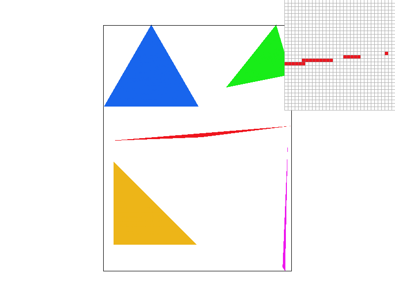
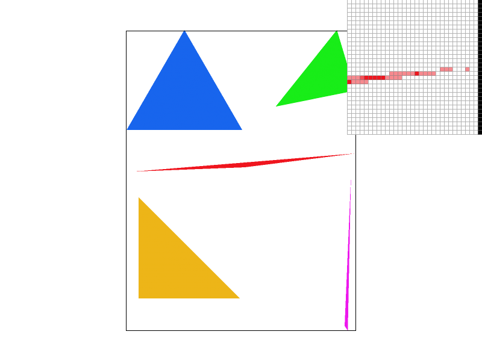
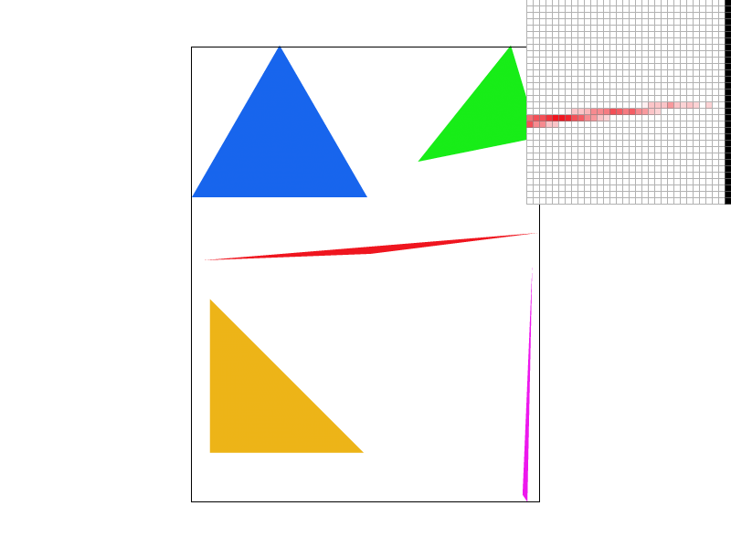
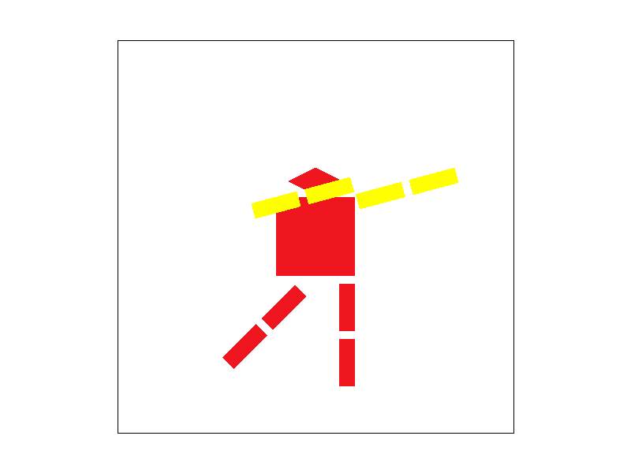
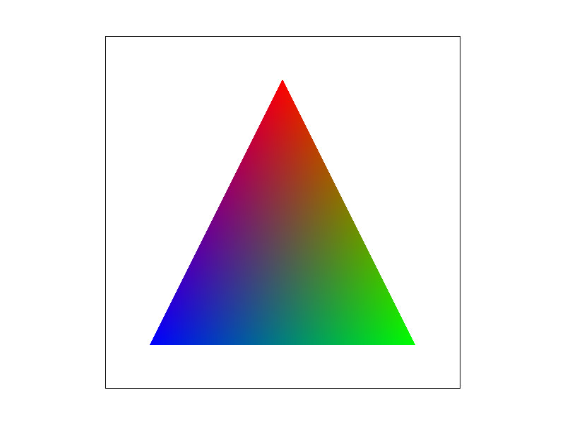
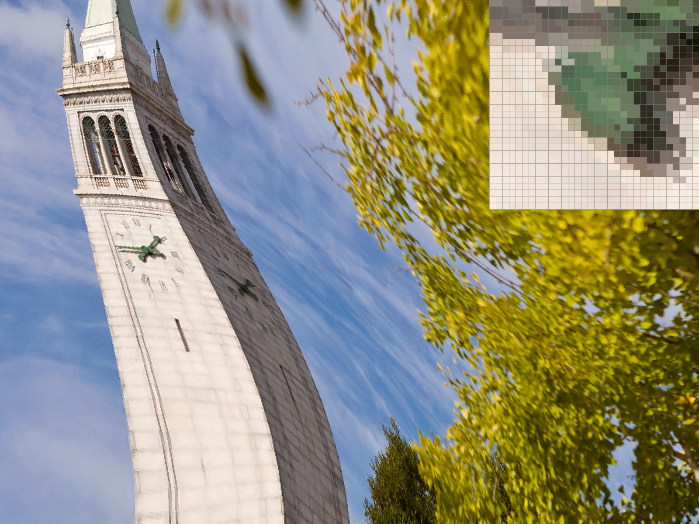
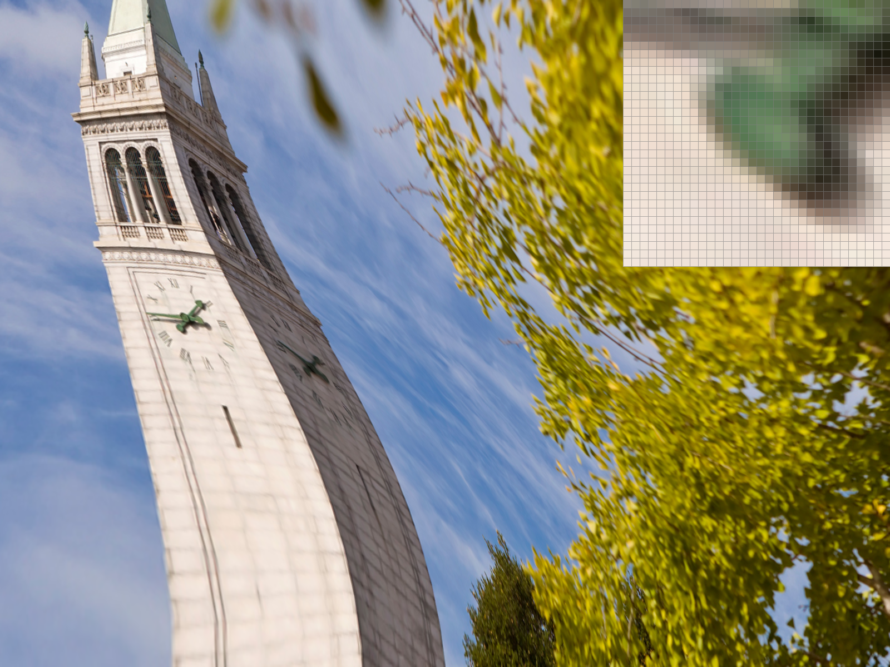
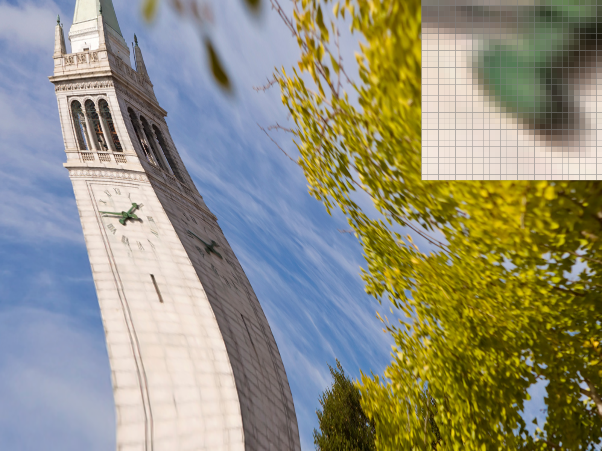
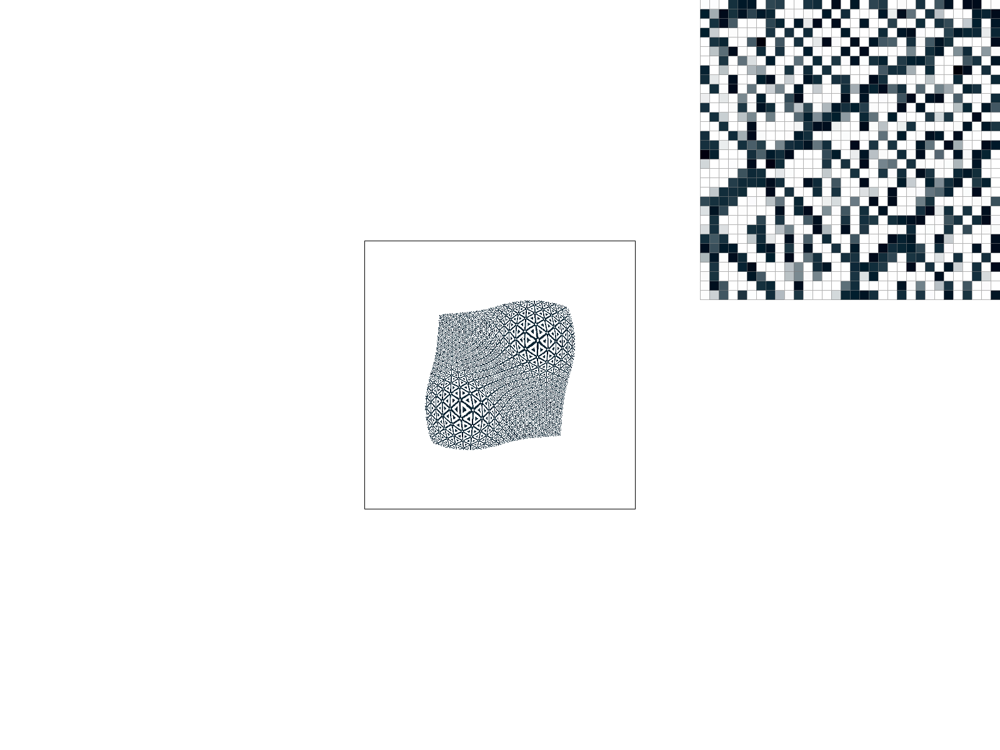
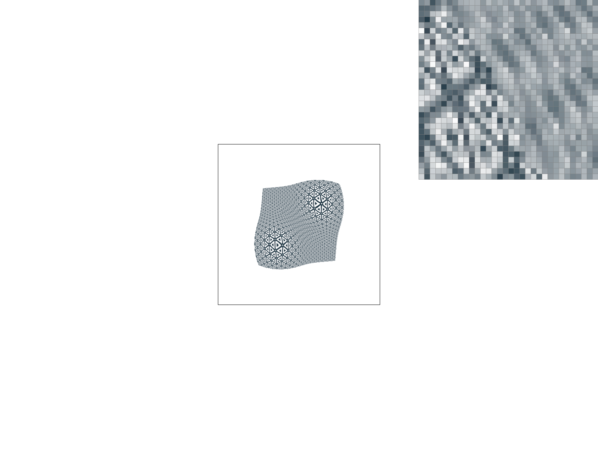

basic/test7.svg follows: 
In this project, I filled in code to complete the implementation of a SVG renderer. Specifically, I implemented logic to (semi-efficiently) identify which pixels lie inside a triangle based on the location of its vertices. I implemented supersampling-based anti-aliasing to reduce "jaggies" in the rendering. For triangles, I also implemented color and texture interpolation based on barycentric coordinates. The textures were sampled using various forms of interpolation, using mipmaps to efficiently remove high-frequency artifacts as appropriate.
Each triangle is defined by three points (xi, yi) for 0 ≤ i < 3. We first compute the bounding box of the triangle, bounded by the minimum and maximum x and y coordinates of these three points. Then, we loop over each test point (x, y) within this bounding box to check if it lies inside the triangle.
To do so, we make the following observation. Consider a vector representing the direction of a line passing through the origin. Rotate it 90 degrees counterclockwise. Then project a test point onto this vector using dot products. The sign of this projection is positive if the test point is to the "left" of the original line (facing along the direction vector), zero if it lies on the line, and negative if it lies to the "right". By translating all coordinates, we can make a similar determination for the position of a point with respect to a line not passing through the origin, so long as we know its direction vector and at least one point on the line.
Now, note that the triangle's vertices are ordered so they are oriented either "clockwise" or "counter-clockwise". If clockwise, then a point lies inside the triangle iff it is not to the left of any line between two consecutive vertices. If counter-clockwise, then a point lies inside the triangle so long as it is not to the right of any line between consecutive vertices. So we can use the above sign-of-the-dot-product test to check if a point lies inside the triangle in either orientation. If so, we color it in, and otherwise we leave it blank.
Mathematically, the test looks like this (in pseudo-code):
// let (x, y) be our test point
// let pts[i] = (xi, yi), where pts[0] == pts[3]
cw = true;
ccw = true;
for i in 0..3:
// the line goes from pts[i] to pts[i+1]
// treat pts[i+1] as the offset, to translate our line through the origin
// let (dx, dy) be the direction vector of the line
dx = pts[i+1][0] - pts[i][0];
dy = pts[i+1][1] - pts[i][1];
// we are taking the inner product of (-dy, dx) with ((x, y) - offset)
auto l = -(x - pts[i+1][0]) * dy + (y - pts[i+1][1]) * dx;
// if we lie to the left or the right of a line,
// we rule out the clockwise/counter-clockwise cases, respectively
if (l > 0) {
cw = false;
}
if (l < 0) {
ccw = false;
}
}
// if we are consistent with one orientation, then we are inside the triangle!
inside_triangle = cw || ccw;My algorithm literally just checks every sample within the bounding box, so it is obviously no worse than such an approach.
A rendering of basic/test4.svg follows: 
The inspector is zoomed in on the rightmost coerner of the red triangle. We see jaggies due to the lack of anti-aliasing, as the triangle thins to a point.
In supersampling, we increase the size of the sample_buffer to width * height * sample_rate. We index into it as sample_buffer[y * width * sample_scale + x], where sample_scale * sample_scale = sample_rate, and x and y are the supersampled coordinates such that 0 <= x < sample_scale * width, and 0 <= y < sample_scale * height.
The fill_pixel(x0, y0) function is modified to fill in all points (x, y) where x0 * sample_scale <= x < (x0 + 1) * sample_scale and analogously for y, so we are essentially filling in a small "box" in the buffer. So for points and lines, which use this function, supersampling has no effect.
However, we do modify the rasterize_triangle function to test each sample in the aforementioned "box" for membership in the triangle separately. This is useful, since then if the border of the triangle passes "partially" through the box associated with an actual output pixel, we end up coloring in that output box "partly", making the borders "fuzzier" and reducing the effects of jaggies. The fuzziness comes from the color averaging process as we write to the framebuffer.
Finally, we modify the resolve_to_framebuffer function to average the color of each point in the "box" corresponding to an actual output point (x, y), before writing to the rgb_framebuffer_target.
Below, we show how basic/test4.svg is rendered with sample rates 1, 4, 9, and 16 (left-to-right, then top-to-bottom):
 
Observe how the sharp corner of the triangle begins to "blur" into the background. This is because we can now shade pixels based on the "fraction" that they are covered by the triangle (estimated using supersampling), rather than shading them either entirely, or not at all, depending on whether the triangle covers the center point of the pixel. The greater the sample rate, the more accurate this estimate becomes, and so the "smoother" the corner becomes"
Cubeman is dabbing. 
I rotated the arms and legs after their translation, and changed the color of the arms to make them more visible. I also scaled the head down in the y-direction and translated it vertically slightly.
Imagine a triangle with coordinates (xi, yi) for 0 ≤ i < 3. Consider some other point (x, y). We wish to find coefficients α, β, γ such that x = αx0 + βx1 + γx2 and y = αy0 + βy1 + γy2. Since there are three unknowns and only two constraints, this system is underdetermined. So we add the constraint α + β + γ = 1 to give us a unique solution.
Notice that α = 1 and β, γ = 0 at (x, y)=(x0, y0), and similarly for the other two vertices. Moreover, we can show that α, β, γ ≥ 0 exactly for points inside the triangle. So we can interpret these coefficients as "weighting" the three vertices, to give us a point somewhere inside their triangle. This gives us barycentric coordinates.
 The above illustration shows how barycentric coordinates are used to weight the colors from each vertex of the triangle in order to shade its interior. The vertices are colored red, blue, and green, and we use the barycentric coordinates of each interior point to weight the color of the vertices and smoothly interpolate between them.
A rendering of basic/test7.svg follows:
When sampling from a texture, we use barycentric coordinates to map each point (x, y) within a textured triangle to coordinates (u, v) on a texture image, scaled such that 0 <= u < width and 0 <= v < height. These may be non-integral values, so they do not correspond exactly to pixels in the texture.
The P_NEAREST sampling technique rounds u and v to integers, so they correspond to a single pixel from the source texture, which we use as our sampled color. The P_LINEAR technique interpolates between the four surrounding pixels closest to (u, v). Specifically, let (u0, v0) represent the rounded version of (u, v), rounding down to the nearest integer. Then the surrounding pixels used for interpolation are located at (u0, v0),(u0 + 1, v0),(u0, v0 + 1),(u0 + 1, v0 + 1). Bilinear interpolation first defines the constants s = u − u0 and t = v − v0. Then, the interpolated color becomes
color = (
(1 - s) * (1 - t) * texture[u0, v0]
+ s * (1 - t) * texture[u0 + 1, v0]
+ (1 - s) * t * texture[u0, v0 + 1]
+ s * t * texture[u0 + 1, v0 + 1]
)So what we are doing here is weighting each of the four surrounding grid points quadratically based on the product of the horizonal and vertical distances between them and the sample point.
We now compare the nearest and bilinear sampling methods (left and right respectively) on a reference image using both 1x and 16x supersampling rates (top and bottom respectively):
  
To prevent aliasing effects, we woud like to sample from a texture with all frequencies higher than the sampling frequency removed. To do this, we prepare "mipmaps", versions of the texture at progressively lower resolutions (by blurring adjacent pixels together). For each sample, we draw our color from the appropriate mipmap level, and avoid aliasing artifacts.
In L_NEAREST mode, we choose the mipmap level whose maximum frequency is nearest to our sampling frequency, and sample our pixel from it. In L_LINEAR mode, we sample from mipmap levels above and below the sampling frequency, then take a weighted average of them to produce the final output.
To determine our sampling frequency, we compute the texture sample points (u, v) for our test point (x, y), as well as for (x + 1, y) and (x, y + 1), then look at the differences in the texture sample points. We take the maximum length of the two texture position offset vectors to determine the lowest sample frequency, and then choose the mipmap whose resolution is closest to that.
Level sampling has the lowest performance overhead, since in L_NEAREST mode it just affects which mipmap we choose to use as a source for our sample. Even in L_LINEAR mode, we only need to make two samples, from the mipmaps above and below our target frequency, and then weight them together with a single lerp. However, it requires additional memory to store all the mipmaps to be used for sampling
Pixel sampling has a higher computation overhead, since we need to sample from four pixels and then perform three lerps to weight them together. But it does not require any additional memory to store textures / buffer output. It also provides better anti-aliasing / blur when our sampling frequency is higher than the source resolution of the texture, since the pixel boundaries are blurred together (as shown above).
Finally, supersampling has the greatest antialiasing power, but has the highest memory and runtime overhead. This is because we need to repeat all our computation once for each subsampled pixel, as well as store an output buffer sample_rate times larger than the actual frame buffer, so there is both a runtime and memory penalty. The advantage is that we get anti-aliasing not just for textures, but also for the edges of polygons.
We compare L_ZERO and L_NEAREST level sampling (top vs bottom) as well as P_NEAREST and P_LINEAR pixel sampling (left vs right) in the below grid.
 
We see that with L_NEAREST level sampling, there is a discontinuity as we switch mipmap levels, where the "blurriness" of the image increases between triangles. We also see that with P_LINEAR, the image is also generally more "blurry" and individual pixels in the backing texture are less visible, since they are interpolated together.
Website link: https://cal-cs184-student.github.io/sp22-project-webpages-rahularya50/proj1/.